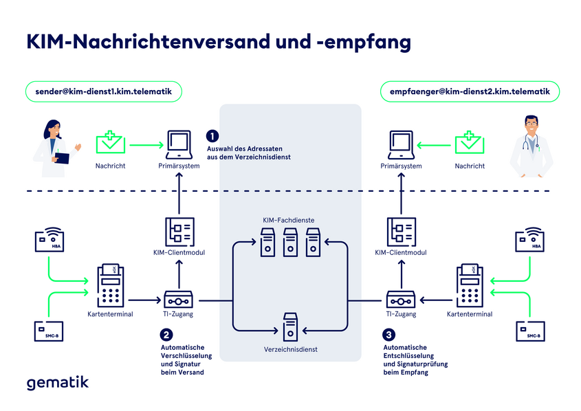

KIM – Kommunikation im Medizinwesen
Was ist das?
KIM ist das sichere E-Mail-System für Praxen, Apotheken & Co. in Deutschland. Endlich Schluss mit Faxen und unsicheren Mails: KIM sorgt dafür, dass Arztbriefe, Befunde oder Abrechnungen digital, verschlüsselt und garantiert nur zwischen echten, geprüften Teilnehmern der Telematikinfrastruktur (TI) verschickt werden.
Technische Basis
- KIM basiert auf den etablierten E-Mail Standards POP3 und SMTP
- Kontakte werden im zentralen Verzeichnisdienst vorgehalten
- Lässt sich mit E-Mail-Programme wie Thunderbird oder Outlook verwenden

Aufbau der KIM-Adressen
- Benutzerteil: Identifiziert eindeutig den Nutzer oder die Organisation (z. B. Praxisname, Institutionskennzeichen).
-
Domänenteil: Gibt an, dass es sich um eine KIM-Adresse handelt, üblicherweise
kim.telematikoder eine Subdomain davon (z. B.anbieter.kim.telematik).
Format:
Beispiel:
Wenn du mehr dazu wissen willst: <Benutzer>@<Domäne>Beispiel:
arztpraxis.muster@kim.telematik
A_21456-01 - Festlegung des Domainparts einer KIM-Adresse